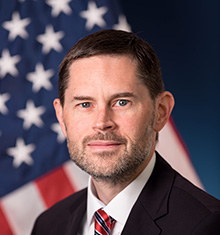
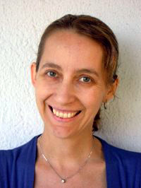

workshop in conjunction with WACV 2019 onImage and Video Forensics |
| Home | Call for papers | Submission | People | Invited Speakers | Program |
|  |  |
|
Matt Turek
Information Innovation Office DARPA |
Luisa Verdoliva
Department of Electrical Engineering and Information Technology University Federico II of Naples |
|
title: TBC |
Recent trends in multimedia forensics |
| abstract: TBC | With the widespread diffusion of powerful media editing tools, falsifying images and videos has become easier and easier in the last few years. Fake multimedia represents a growing menace in many fields of life, notably in politics, journalism, and the judiciary. In response to this threat, a large number of methods have been proposed, relying both on signal processing and deep learning approaches. In this talk some promising solutions will be described for the detection and localization of conventional and emerging attacks to multimedia integrity, including computer graphics and GAN-based manipulations. |
|
Dr. Matt Turek joined DARPA’s Information Innovation Office (I2O) as a program manager in July 2018. His research interests include computer vision, machine learning, artificial intelligence and their application to problems with significant societal impact. Prior to his position at DARPA, Dr. Turek was at Kitware, Inc., where he helped lead a 40 person computer vision team. His research has focused in multiple areas including large scale behavior recognition and modeling; object detection; activity recognition; normalcy modeling and anomaly detection; and image indexing and retrieval. Dr. Turek has made significant contributions to multiple DARPA and Air Force Research Lab efforts and has transitioned large scale systems for operational use. Before joining Kitware, Turek worked for GE Global Research, conducting research in medical imaging and industrial inspection. Dr. Turek holds a Doctor of Philosophy in Computer Science from Rensselaer Polytechnic Institute, a Master of Science in Electrical Engineering from Marquette University, and a Bachelor of Science in Electrical Engineering from Clarkson University. His doctoral work focused on combinatorial optimization techniques for computer vision problems. Dr. Turek is a co-inventor on 14 patents and co-author of multiple publications, primarily in computer vision. |
Dr. Luisa Verdoliva is Associate Professor at University Federico II of Naples. She has been Guest Professor at the Friedrich-Alexander-University in Erlangen (May-October 2018). Her research activity focuses on multimedia forensics, in particular on source identification, image and video forgery detection and localization. She is Associate Editor for IEEE Transactions on Information Forensics and Security (2018-2020) and has been member of the IEEE Information Forensics and Security Technical Committee (2016-2018). She is the Principal Investigator for the Research Unit of University Federico II of Naples in the DISPARITY (Digital, Semantic and Physical Analysis of Media Integrity) project funded by DARPA (Defense Advanced Research Projects Agency) under the MEDIFOR program. She led her research group in several international contests, including the recent 2018 IEEE Signal Processing Cup on camera model identification (first prize) and the 2013 IEEE Image Forensics Challenge (first prize both in the detection and localization tasks). |